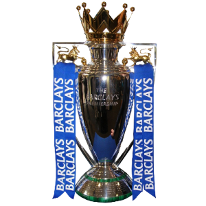

DÜNYA KUPASI
Dünya Kupası, uluslararası alanda futboldan sorumlu en üst düzey yönetim organı olan Uluslararası Futbol Federasyonları Birliği (FIFA) üyesi ülkelerin erkek millî takımlarının katılabildiği uluslararası futbol turnuvası. 1930'daki ilk turnuvadan beri, II. Dünya Savaşı sebebiyle gerçekleştirilemeyen 1942 ve 1946 yılları dışında dört yılda bir düzenlenmektedir. Turnuvanın geçerli statüsünde, turnuva öncesindeki üç yıl boyunca süren eleme aşaması vardır. Günümüz itibarıyla FIFA üyesi 211 ülkenin katılabileceği elemeleri geçmeyi başaran takımlar, FIFA Dünya Kupası Finalleri adını taşıyan final aşamasında mücadele eder. Finallerde , o yılın turnuvasına ev sahipliği yapmasından ötürü eleme oynamaksızın direkt olarak katılan ev sahibi ülke veya ülkelerle birlikte toplamda , 32 millî takım yer alır. Dörder takımdan oluşan sekiz gruba ayrılan katılımcılar, bu ilk aşamada grubundaki diğer takımlarla birer maç yaptıklar ı birinci turda yarışır. Grupları ilk iki sırada tamamlayan takımlar, tek maçlı eleme sistemiyle gerçekleştirilen ikinci aşamaya geçer. Final maçını kazanan takım şampiyon olurken üçüncü takımı belirleme amacıyla yarı finalde kaybedenler arasında bir üçüncülük maçı oynanır. Günümüze kadar düzenlenmiş olan toplam 21 turnuvada 8 farklı takım şampiyonluğa ulaşmıştır. Her turnuvaya katılmış olan tek takım konumundaki Brezilya, kazandığı beş şampiyonluk ile kupanın en başarılı takımıdır. İtalya ve Almanya dörder; Arjantin, Fransa ve Uruguay ikişer; İngiltere ve İspanya ise birer şampiyonluk kazanmıştır. Son şampiyon, 2018'deki turnuvada şampiyon olan Fransa'dır.
.png)
AVRUPA FUTBOL SAMPİYONASI
Avrupa Futbol Şampiyonası, 1960'tan beri UEFA tarafından 4 yılda bir düzenlenen futbol turnuvasıdır. Orijinal adı Avrupa Uluslar Kupası adıyla kurulmuş olup, 1968 yılında şu anki ismini almıştır. Turnuva ülkelerin üst düzey millî futbol takımları arasında düzenlenir. Turnuvaya katılım göstermek için ev sahibi ülke dışında kalan takımlar ön eleme oynamak mecburiyetindedir . Avrupa Futbol şampiyonasını kazanan takım ayrıca FIFA Konfederasyonlar Kupasına katılma hakkı elde ede r ancak bu turnuvaya katılım göstermek zorunlu değildir.[1] Günümüze kadar oynanan 15 turnuvayı 10 farklı millî takım kazanmışt r: Almanya ve İspanya üçer kez, Fransa ve İtalya 2 kez, SSCB, Çekoslovaky a, Hollanda, Danimarka, Yunanistan ve Portekiz birer kez turnuvayı birinci olarak tamamlayan ülkelerdir . 2008 ve 2012 yıllarında düzenlenen turnuvayı kazanma başarısı gösteren İspanya bu turnuvayı üst üste kazanabilen tek takım olma unvanını taşımaktadır. 2016 yılında Fransa'da düzenlenen turnuvanın Paris'te oynanan final karşılaşmasını Ev sahibi Fransa'yı uzatmalarda 1-0 yenen Portekiz kazanmıştır. Karşılaşmanın tek golünü 109. dakikada Éder kaydetmiştir. 2020 Avrupa kupasını kim aldı? EURO 2020 finali: İtalya İngiltere'yi penaltılarda yenerek Avrupa Futbol Şampiyonu oldu. İngiltere'nin başkenti Londra'daki Wembley Stadyumu'nda İngiltere-İtalya arasında oynanan EURO 2020 final maçında İtalya İngiltere'yi penaltılarda yenerek 2. kez Avrupa Futbol Şampiyonası 'nı kazandı.

UEFA ŞAMPİYONLAR LİGİ
ngilizce: UEFA Champions League) veya kısa kullanımıyla Şampiyonlar Ligi , Avrupa Futbol Federasyonları Birliği (UEFA) tarafından her yıl düzenlenen ve UEFA'ya bağlı birinci liglerdeki takımların mücadele ettiği uluslararası futbol turnuvası. UEFA üyesi her ülke şampiyonunu n (bazı ülkelerde ilk birkaç sırada yer alan takımların) katıldığı organizasyon, Avrupa'daki en prestijli turnuva konumundadır. 1955'te Avrupa Şampiyon Kulüpler Kupası adıyla , çift maçlı eleme sistemiyle düzenlenmeye başladı. Bu dönemde şampiyonaya yalnızca, önceki sezonda ülkesinin en üst seviye ligini şampiyon olarak tamamlamış takımlar katılabilmekteydi . 1991-92 sezonuyla birlikte format değişikliğine gidilerek lig usulüyle düzenlenen grup aşaması da turnuvaya eklendi . 1992-93 sezonuyla birlikte organizasyonun adı günümüzdeki şekliyle değiştirildi. 1996-97 sezonuyla birlikte ülke şampiyonlarının yanı sıra, ülkelerin UEFA sırasına göre liglerini şampiyonun ardında tamamlayan bazı takımlar da turnuvaya katılmaya başladı. Günümüzde, bir sezonda aynı ülkeden en fazla beş takım mücadele edebilmektedir . Ligdeki pozisyonu gereğince Şampiyonlar Ligi'ne katılan takımların ardındaki takımlar ise , Şampiyonlar Ligi'nin bir alt seviyesi olan UEFA Avrupa Ligi'ne katılabilmektedir. Günümüzdeki formata göre turnuvanın bir sezonu temmuz ortalarında başlar. Çift maçlı eliminasyon sistemiyle gerçekleştirilen üç ön eleme turu ve bir play off turu sonrasında, lig usulüyle oynanan grup aşamasına geçilir. 22 takım direkt olarak grup aşamasında turnuvaya dahil olurken , önceki turlardan gelen 10 takımın eklenmesiyle toplamda 32 takım bu aşamada yer alır. Dörder takımdan oluşan 8 grupta oynanan maçlar sonucunda, gruplarını ilk iki sırada tamamlayan takımlar bir üst tura yükselir , üçüncü sıradaki takımlar ise UEFA Avrupa Ligi'ne gider. Çift maçlı eliminasyon sistemiyle oynanan eleme aşamasındaki maçlar sonunda, mayıs ayında oynanan tek ayaklı final maçıyla birlikte sezon tamamlanır. Şampiyon olan takım, UEFA Süper Kupası ve FIFA Kulüpler Dünya Kupası'nda mücadele etmeye hak kazanır. Şampiyonlar Ligi'nde bugüne kadar 10 farklı ülkeden 22 farklı takım şampiyon oldu, 12 takım ise birden fazla şampiyonluk yaşadı. Kazandığı 14 şampiyonlukla en çok şampiyon olan takım Real Madrid iken , İspanya takımları toplamda kazandığı 19 şampiyonlukla turnuva tarihinin en başarılı ülkesidir. Real Madrid, kupanın ilk beş sezonunda üst üste şampiyon olarak en uzun şampiyonluk serisini elde etmiştir. Organizasyonun tamamlanan son sezonu olan 2021-22 sezonunda ise şampiyonluğa Real Madrid ulaşmıştır.

UEFA AVRUPA LİGİ
1971 yılından beri UEFA tarafından organize edilen, Avrupa'nın kulüpler bazında Şampiyonlar Ligi'nden sonraki en önemli futbol turnuvasıdır. Takımlar, ulusal lig ve kupa maçlarında gösterdikleri performans ile bu kupaya katılmaya hak kazanırlar. Avrupa'nın, UEFA Şampiyonlar Ligi'nden sonraki en önemli kulüp turnuvası olduğundan dolayı Kupa 2 olarak da bilinir.Haziran 2009'da eski adı UEFA Kupası olan kupada, turnuvanın Şampiyonlar Ligi standartlarına erişmesi için köklü birtakım statü değişikliklerine gidilmiş, bununla birlikte de 2009-10 sezonundan itibaren şimdiki ismiyle düzenlenmeye başlanmıştır.[2][3] Bu değişiklikler sonucunda UEFA Avrupa Ligi, UEFA Kupası'nın devamı olarak kabul edilmiştir.[4] 1955 yılında düzenlenmeye başlanan Fuar Şehirleri Kupası, UEFA Kupası'nın öncülüdür.[5] 1971 yılında Fuar Şehirleri Kupası'nın ismi UEFA Kupası olarak değiştirilmiştir. 1999 yılında ise Kupa Galipleri Kupası kaldırılarak UEFA Kupası ile birleştirilmiştir.[6] 2004-05 sezonu öncesi grup aşamalarında bazı statü değişiklikleri yapılan kupa 2009 yılındaki son düzenleme ile şimdiki halini almıştır. Son düzenlemelerdeki isim ve statü yenilenmesinin yanı sıra kupa Intertoto Kupası ile de birleştirilmiştir. Kupanın ilk şampiyonu 1972 Finali'nde Wolverhampton Wanderers'i deviren Tottenham Hotspur'dur. İsim değişikliği sonrasında ilk şampiyonluğu kazanan takım ise 2010 Finali'nde Fulham'ı 2-1 deviren Atlético Madrid'dir. Kupayı en çok kazanan takım ise altı kez şampiyonluğa uzanan Sevilla'dır.
İNGİLTERE
PREMİER LİG
İngiliz futbolunda lig sisteminin en üst seviyesindeki ligdir. Her yılın Ağustos ayında başlayan ve toplam 20 takımın katılımıyla gerçekleşen ligin sona ermesinin ardından , bağlı bulunan English Football League'den üç takım terfi ederken Premier League'den üç takım ise küme düşer. Premier League, üye kulüplerin hissedar olarak hareket ettiği bir şirkettir. Ağustos'tan Mayıs'a kadar devam eden bir sezonda , her takımın birbiri ile iç ve dış sahada birer tane olmak üzere iki kere karşılaştığı 38 lig haftasından oluşur.[1] Maçlar genellikle Cumartesi ve Pazar öğleden sonraları oynanmakla beraber haftanın her günü müsabaka olabildiği ve genellikle bir takvim haftası içerisinde birden fazla lig haftası geçildiği için bu tarihlere hafta yerine 20 takımın birbiri ile karşılaştığı on adet müsabakadan oluşan müsabaka günü (matchday) tabiri kullanılır. Premier League , kurulduğu günden bu yana 47 İngiliz ve iki Galler kulübüne (Swansea City ve Cardiff City) ev sahipliği yaptı ve böylece sınır ötesi bir lig haline geldi. Organizasyon, Football League First Division'da yer alan kulüplerin, 1888 yılında kurulan Football League'den ayrılma kararını takiben 20 Şubat 1992'de FA Premier League ismiyle kuruldu . Lige katılan takımlar kazançlı bir televizyon hakları anlaşmasından yararlandılar. [2] Anlaşma, 2013-2014 yılları arasında yurt içinde £1 milyar değerinde idi v e BSkyB ile BT Group, sırasıyla 116 ve 38 maçı yayınlama hakkına sahipti.[3] Lig, yerli ve uluslararası televizyon haklarından da yılda €2.2 milyar değerinde gelir sağlıyordu.[4] 2014-15 yılında takımlar £1,6 milyar gelir elde ederken, [5] 2016-17 yılında bu sayı hızla artarak £2.4 milyara ulaştı ve takımlar arasında paylaştırıldı.[6] Premier League, dünyanın en çok izlenen spor ligidir ve 212 bölgede 643 milyon eve, 4.7 milyar potansiyel TV izleyicisine yayın yapmaktadır.[7][8] 2014-15 sezonunda, 36.000 seyirci ortalamasına sahip Premier League,[9] 43.500 ortalamalı Bundesliga'nın arkasından herhangi bir profesyonel futbol liginde ikinci en yüksek seyirci ortalamasına sahip oldu.[10] Çoğu stadyum tam kapasitesine yakın bir doluluk oranına sahiptir.[11] Premier League, 2018 yılından itibaren son beş sezon boyunca Avrupa kupalarındaki performanslara bağlı olarak oluşturulan, liglerin UEFA katsayılarında ikinci sırada yer almaktadır.[12] Premier League'in kurulduğu 1992 yılından bu yana toplam kırk dokuz kulüp mücadele etti . Bunlardan yedisi ligi kazanma başarısı gösterdi: Manchester United (13), Manchester City (6), Chelsea (5), Arsenal (3), Blackburn Rovers (1) Leicester City (1) ve Liverpool (1). Arsenal 2003-04 sezonunun sonunda, tek bir maç kaybetmeden ligi zirvede tamamladı. Böylece bir Premier League sezonunu maç kaybetmeden şampiyon tamamlayan tek kulüp oldu ve yenilmezler anlamına gelen "The Invincibles" lakabını aldı. Manchester City 2017-18 sezonunda ligde toplam 100 puana ulaştı ve böylece lig tarihinde bir sezon içerisinde en çok puan toplayan takım unvanını kazandı. Ligin tamamlanan son sezonu olan 2021-22 sezonunda ise şampiyonluğa ulaşan takım Manchester City olmuştur.